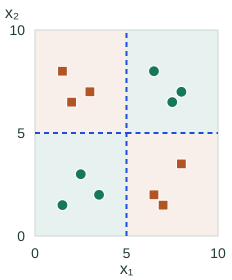
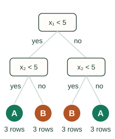

Decision Trees: Foundations
A decision tree predicts by asking a sequence of questions. Each answer sends the row to another question or to a stored prediction. We will first follow one prediction, then explain how training chooses the questions.
Recognize the three parts
| Part | Job |
|---|---|
| Root | The first question, where every row starts |
| Internal node | A test that chooses a child, such as “is feature 1 below 5?” |
| Leaf | A stored prediction for rows that follow that path |
For classification, a leaf can store class proportions and predict the most common class. For squared-error regression, it stores the average target among its training rows. The tree is learned from labeled examples, so this is supervised learning.
See the same questions as cuts in a plane
Let $x_1$ be the horizontal feature and $x_2$ the vertical feature. Testing $x_1<5$ makes a vertical cut; testing $x_2<5$ makes a horizontal cut. Each child’s cut applies only inside the region that reached that child.
▶ Growing a Tree = Carving the Plane
Compare the feature space with its matching tree. Each step reveals a chosen split and the corresponding question. Unfinished regions show their class counts. This shows what a tree can represent; it is not a trace of greedy training.
Feature space
Matching tree
Feature space after three splits

Matching tree with four leaves

Query (7, 2): 7 is at least 5 → go right; 2 is below 5 → predict B.
Each leaf therefore owns a rectangular region in this two-feature example. Points inside that region receive the same prediction. More splits create finer regions; a single-feature-threshold tree approximates diagonal or curved boundaries with steps.
Follow one row through the questions
For the row $(x_1,x_2)=(7,2)$, the first answer is “no, 7 is not below 5,” so go right. The next answer is “yes, 2 is below 5,” so take the lower region and predict class B.
This is also a rule: if feature 1 is at least 5 and feature 2 is below 5, predict B. Prediction cost follows the number of questions on this path. A deeper path needs more comparisons.
Choose the next useful split
At a training node, compare candidate feature thresholds by how much they improve the children’s predictions. Choose the best acceptable split and repeat inside each child. This is greedy: it judges the next split rather than searching all possible complete trees.
build_tree(rows):
if a stopping rule applies:
return a leaf summarizing rows
best = best_valid_split(rows)
if no acceptable split exists:
return a leaf summarizing rows
left, right = partition(rows, best)
return a node containing best,
build_tree(left), and build_tree(right)The next chapter defines the split score. The threshold-search note explains which candidate numbers need testing.
The checkerboard above is a useful distinction: a tree can represent it, but a first split can have zero immediate impurity gain even though later splits help. Whether a learner finds that structure depends on its search and stopping rules.
Control how finely the tree divides the data
A large tree can fit small fluctuations in the training sample. Its leaf predictions may then change sharply when a few rows change. A tiny tree can miss useful structure. Choose depth, leaf-size limits, or pruning using held-out performance.
Unrestricted growth does not guarantee perfect training accuracy: identical feature rows with conflicting labels cannot be separated by feature tests. Even a perfect fit on the training set is not evidence of good future predictions.
Continue to pruning and cost after learning split scores. The handwritten companion retains the original scans; the C++ implementation puts the algorithm into code.
Sources and next steps
- scikit-learn: Decision Trees — Classification, regression, greedy partitioning, and tree controls.